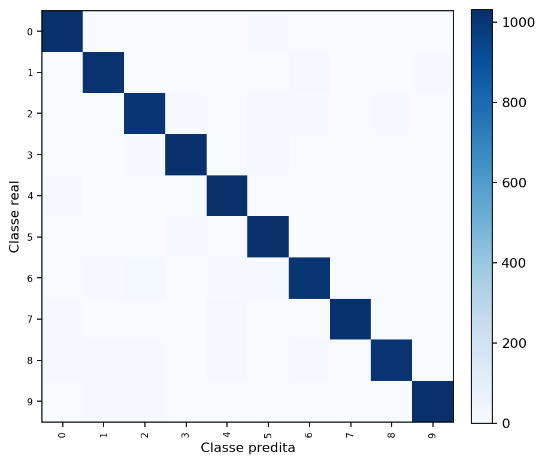
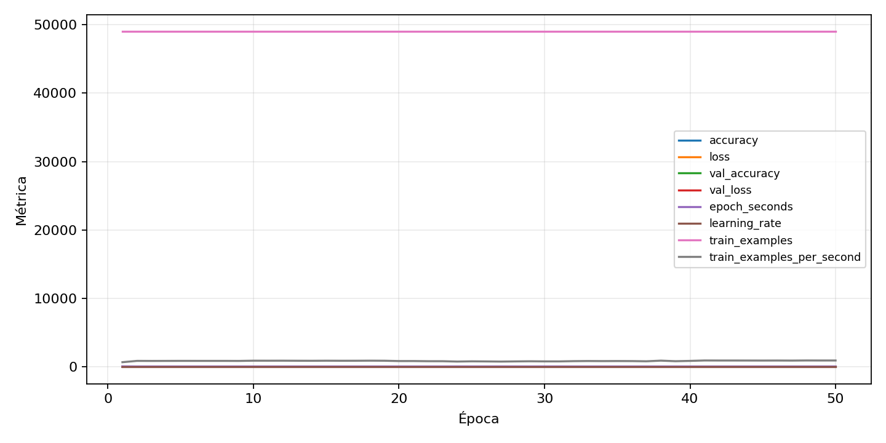

| n_samples | 10500 |
|---|---|
| loss | 0.14078602194786072 |
| accuracy | 0.9729523809523809 |
| balanced_accuracy | 0.972952380952381 |
| macro_f1 | 0.9729583371659372 |


| Índice | Classe | Suporte | Precisão | Recall | F1 |
|---|---|---|---|---|---|
| 0 | 0 | 1050 | 0.9681050656660413 | 0.9828571428571429 | 0.9754253308128544 |
| 1 | 1 | 1050 | 0.9760306807286673 | 0.9695238095238096 | 0.9727663640707119 |
| 2 | 2 | 1050 | 0.9627151051625239 | 0.959047619047619 | 0.9608778625954199 |
| 3 | 3 | 1050 | 0.9762131303520457 | 0.9771428571428571 | 0.9766777724892908 |
| 4 | 4 | 1050 | 0.9590697674418605 | 0.981904761904762 | 0.9703529411764706 |
| 5 | 5 | 1050 | 0.961789375582479 | 0.9828571428571429 | 0.9722091380122468 |
| 6 | 6 | 1050 | 0.969377990430622 | 0.9647619047619047 | 0.9670644391408113 |
| 7 | 7 | 1050 | 0.9903006789524733 | 0.9723809523809523 | 0.9812590100913022 |
| 8 | 8 | 1050 | 0.9834146341463414 | 0.96 | 0.9715662650602409 |
| 9 | 9 | 1050 | 0.9837320574162679 | 0.979047619047619 | 0.9813842482100239 |
{"adapter":"kmnist","balance_mode":"all_raw","class_names":["0","1","2","3","4","5","6","7","8","9"],"dataset":"kmnist","dataset_options":{},"dataset_root":"/home/msduda/datasets-tcc/kmnist","native_channels":1,"normalization":"unit_interval","num_classes":10,"protocol":{"checkpoint_monitor":"val_macro_f1","dtype_policy":"mixed_float16","early_stopping":{"patience":50,"restore_best_weights":true},"evaluation_augmentation":false,"input_channels":"native","op_determinism":true,"optimizer":"Adam","pretrained_weights":false,"qat_weight_bits":null,"reduce_lr_on_plateau":{"factor":0.3,"min_lr":1e-07,"patience":50},"resize":"proportional_padding","test_time_augmentation":false,"training_from_scratch":true},"seed":42,"source_fingerprint":"8928d478d8d23938a73b4f4a92c407bf3d74beff1e0e67e3644d6ecdc30cf828","source_manifest":{"class_names":["0","1","2","3","4","5","6","7","8","9"],"joined_samples":70000,"metadata":{"layout":"kmnist-component-npz"},"name":"kmnist","native_channels":1,"source_path":"/home/msduda/datasets-tcc/kmnist","splits":{"test":10000,"train":60000},"target_size":64},"target_size":64,"test_fraction":0.15,"train_fraction":0.7,"training":{"augmentation":{"brightness_delta":0.0,"contrast_lower":1.0,"contrast_upper":1.0,"cutout_max_frac":0.0,"cutout_prob":0.0,"flip_lr":false,"noise_std":0.0,"translate_frac":0.0,"zoom_max":1.0,"zoom_min":1.0},"batch_size":256,"default_image_size":64,"dtype_policy":"mixed_float16","early_stopping_patience":50,"extra_fraction":0.0,"image_size_overrides":{"gtsrb":128},"keras_verbose":1,"learning_rate":0.0003,"max_epochs":50,"preprocess_cache_max_mib":0,"qat_weight_bits":null,"reduce_lr_factor":0.3,"reduce_lr_min_lr":1e-07,"reduce_lr_patience":50,"shuffle_buffer_max_mib":0},"validation_fraction":0.15}
{"epochs_completed":50,"epochs_recorded":50,"evaluation_seconds":18.805310263999672,"fit_seconds_current_attempt":3379.119965716,"max_epoch_seconds":71.2604664559999,"max_epochs":50,"mean_epoch_seconds":56.563991765260006,"mean_train_examples_per_second":869.5623851713692,"median_train_examples_per_second":877.5743803435444,"min_epoch_seconds":52.214691119000236,"selected_checkpoint":"/mnt/e/tcc-benchmark/outputs/kmnist-quantization-2026-08-09/fp16/kmnist/runs/kmnist__unit_interval__all_raw__seed-42/checkpoints/best.keras","tensorflow_gpu_memory_after":{"GPU:0":{"current":5811200,"peak":337601792}},"total_seconds":2828.1995882630004,"training_seconds":2828.1995882630004,"wall_seconds_current_attempt":3401.6482214350003}
{"elapsed_seconds":3401.580841157,"event_counts":{"data_preparation_end":1,"data_preparation_start":1,"epoch_end":50,"evaluation_end":1,"evaluation_start":1,"fit_end":1,"fit_start":1,"periodic":670,"run_completed":1,"train_start":1},"generated_at":"2026-08-09T22:14:44.678+00:00","gpu_backend":"pynvml","interval_seconds":5.0,"metrics":{"cpu_percent":{"count":728,"max":17.0,"mean":12.966483516483517,"min":0.0,"p50":13.1,"p95":16.264999999999997},"disk_data_free_bytes":{"count":728,"max":998271537152.0,"mean":998271475847.033,"min":998271467520.0,"p50":998271475712.0,"p95":998271475712.0},"disk_data_percent":{"count":728,"max":2.7,"mean":2.7,"min":2.7,"p50":2.7,"p95":2.7},"disk_data_total_bytes":{"count":728,"max":1081101176832.0,"mean":1081101176832.0,"min":1081101176832.0,"p50":1081101176832.0,"p95":1081101176832.0},"disk_data_used_bytes":{"count":728,"max":27837353984.0,"mean":27837345656.967033,"min":27837284352.0,"p50":27837345792.0,"p95":27837345792.0},"disk_output_free_bytes":{"count":728,"max":207163428864.0,"mean":207156955619.86813,"min":207150559232.0,"p50":207158149120.0,"p95":207158935552.0},"disk_output_percent":{"count":728,"max":79.3,"mean":79.3,"min":79.3,"p50":79.3,"p95":79.3},"disk_output_total_bytes":{"count":728,"max":1000186310656.0,"mean":1000186310656.0,"min":1000186310656.0,"p50":1000186310656.0,"p95":1000186310656.0},"disk_output_used_bytes":{"count":728,"max":793035751424.0,"mean":793029355036.1318,"min":793022881792.0,"p50":793028161536.0,"p95":793035718656.0},"elapsed_seconds":{"count":728,"max":3401.52105,"mean":1705.8720473214287,"min":0.03186,"p50":1702.965667,"p95":3251.8808443499997},"gpu_count":{"count":728,"max":1.0,"mean":1.0,"min":1.0,"p50":1.0,"p95":1.0},"gpu_memory_percent":{"count":728,"max":52.64921188354492,"mean":50.1151123544672,"min":43.7253475189209,"p50":50.03504753112793,"p95":51.17250204086304},"gpu_memory_total_bytes":{"count":728,"max":8589934592.0,"mean":8589934592.0,"min":8589934592.0,"p50":8589934592.0,"p95":8589934592.0},"gpu_memory_used_bytes":{"count":728,"max":4522532864.0,"mean":4304855371.956044,"min":3755978752.0,"p50":4297977856.0,"p95":4395684454.4},"gpu_temperature_c":{"count":728,"max":53.0,"mean":44.43269230769231,"min":39.0,"p50":44.0,"p95":51.0},"gpu_utilization_percent":{"count":728,"max":100.0,"mean":32.21153846153846,"min":1.0,"p50":34.0,"p95":56.64999999999998},"process_cpu_percent":{"count":728,"max":212.1,"mean":168.31195054945056,"min":0.0,"p50":173.3,"p95":210.0},"process_read_bytes":{"count":728,"max":59396096.0,"mean":58351419.07692308,"min":327680.0,"p50":59363328.0,"p95":59363328.0},"process_rss_bytes":{"count":728,"max":3790753792.0,"mean":3638087426.8131866,"min":1126584320.0,"p50":3717892096.0,"p95":3771145420.8},"process_vms_bytes":{"count":728,"max":48586883072.0,"mean":48346204401.93407,"min":41774948352.0,"p50":48436436992.0,"p95":48585699328.0},"process_write_bytes":{"count":728,"max":1146880.0,"mean":1133607.3846153845,"min":4096.0,"p50":1146880.0,"p95":1146880.0},"ram_available_bytes":{"count":728,"max":14693953536.0,"mean":12337626511.472527,"min":12191019008.0,"p50":12250626048.0,"p95":12787241369.6},"ram_percent":{"count":728,"max":26.6,"mean":25.763736263736263,"min":11.6,"p50":26.3,"p95":26.6},"ram_total_bytes":{"count":728,"max":16619089920.0,"mean":16619089920.0,"min":16619089920.0,"p50":16619089920.0,"p95":16619089920.0},"ram_used_bytes":{"count":728,"max":4428070912.0,"mean":4281463408.5274725,"min":1925136384.0,"p50":4368463872.0,"p95":4413322444.8}},"sample_count":728,"schema_version":1}